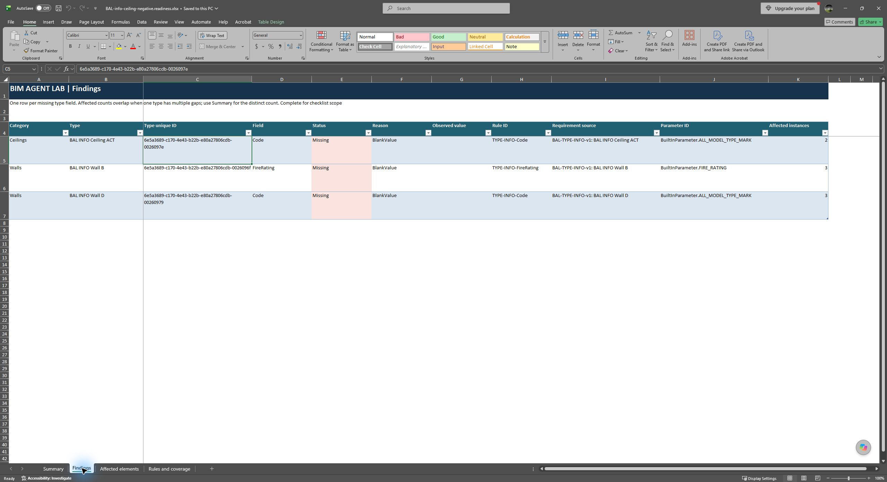
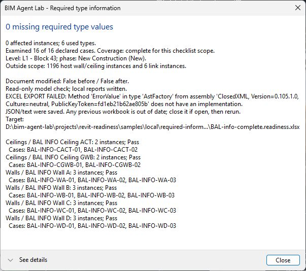
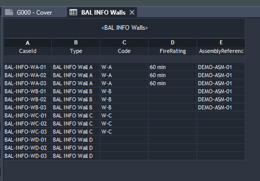

Build useful BIM tools with an AI agent
Session 2 · From working plugin to your next tool
Aaron Ryan
Where we left off
Can we tell whether required wall and ceiling type information is present?
Build in checkable steps
| Step | How we engaged the agent |
|---|---|
| Prove the setup | Check prerequisites; build a minimal read-only Revit command. |
| Add one useful rule | Define required type information and controlled sample results. |
| Add Excel output | Review a library and its dependencies; compare with known results. |
| Connect an agent | Compare bridges; test actual desktop compatibility early. |
| Prepare recovery | Record installed files and backups before changes; test restoration. |
| Retain the lesson | Record participant decisions and the agent's reproducible procedure. |
Keep the calculation separate from the way people ask for it.
Our first dependency: ClosedXML
“Ok, let's add the Excel output using ClosedXML with those four worksheets. Review the dependencies and licenses, verify the output against our sample results, and record the process in bim-agent-lab.”

A passing build did not predict the first Revit run

Add a dependency responsibly
Add [output] using a suitable library. Research its current compatible version, license and transitive dependencies. Explain what will be installed. Verify the output against our independent sample results in the actual application, then record the process in both teaching layers.
Which checks have actually passed, and which still need the real application? Investigate the failure, preserve the working outputs and models, and show evidence that the fix works in Revit.
What MCP adds
MCP (Model Context Protocol) lets an AI application discover and call tools.
The shared evaluator applies the written rules. These calls read the model; they do not edit it or export files.
Choosing the bridge: say what you reuse
“Ok, let's build the minimal custom bridge with C# MCP SDK 2.2.0 and protocol 2026-07-28. … one important thing to emphasize is whether you are using any code from the SDK 1.26.0, whether you're just using it as a learning precedent, or whether you're going handroll your own from scratch.”
Test the least certain assumption first
“wait sorry...neither desktop apps support the new MCP protocol?”
Prepare recovery before the first write
Installing the bridge replaces files on a working machine. Before any change, the installer records an inventory and verified backups.
Before touching the working installation, show what is already saved if the installer stops after its first write. Test interruptions between the important steps, then recover in a new process twice. Compare the original bytes and inventories, preserve unrelated files, and show what happens if someone edits a file before recovery.
Two ways to use the same calculation
Manual
Saves JSON and text evidence plus the four-sheet Excel workbook.Conversational
Returns structured results to the agent. Reads only: no edits and no exported files.Ask for an assessable answer
Get a fresh readiness context and check required wall and ceiling type information. Report the full model path, scope, requested and examined counts, findings and affected instances, both completeness flags, scope issues and unexamined cases. Explain whether the declared scope passes. Do not edit or export anything.
“The verdict covers only the declared 16 instances. Another 1,196 host wall and ceiling instances fall outside that scope and were not evaluated, and 6 link instances were excluded.”
Zero findings is not enough.
A readiness verdict needs both the rules and complete coverage.
0 findings
2 findings, 6 instances
3 findings, 8 instances
0 findings, but 15 of 16 examined
0 findings, but 2 have no rule
Check the answer against something independent

Keep the claim inside its scope
An expired-token test alone does not prove model-switch detection. Switching models and recovering with a fresh context were tested live in both desktop apps.
Ask for a spec, a plan and an independent reviewer
“I also want you to write a spec and implementation plan, with review sessions that we hand to an external reviewer, so that we can teach that skill…”
Ask what connects the findings
Do these findings share a missing concept or reasoning framework? Explain the connection with evidence, identify other places it may apply, and state the tests that would demonstrate the broader guarantee. Distinguish a confirmed pattern from a hypothesis.
What that revealed in our build
The plan review found three major gaps: cancellation lost before a Revit read, a server that could hang while stopping, and an interrupted install without backups.
“The common gap is reasoning about what remains safe when an operation stops halfway through.”
Assess the reviewer's diagnosis against the source before patching. State the guarantee that must hold across the whole operation, including interruption and failure. Apply the supported insight to every affected handoff, derive tests from it, preserve the original reproductions, and explain why the correction covers more than those examples.
Ask what each kind of evidence proves
| Evidence | What it proves |
|---|---|
| A build | The code compiles. |
| Offline tests | Specified behavior works outside the application. |
| A live Revit run | The host integration works. |
| A desktop answer | What the participant actually sees. |
Continue with bim-agent-lab
github.com/bringfire/bim-agent-lab
- Public now. No account or invitation needed to read or clone.
- MIT license for original material.
- Lessons, source code, evidence, and agent instructions in one place.
Your printed handout says "private during preparation". It went public on October 26; the same link and QR code work.
Where to start
| Start with | Use it for |
|---|---|
README.md | Current status and navigation |
docs/start-here.md | Your first steps as a participant |
docs/tutorials/README.md | How we engaged the agent at each stage |
AGENTS.md | Rules and boundaries for agents working here |
docs/how-to/agent-handoff.md | Technical setup, verification and remaining work |
git clone -c core.longpaths=true https://github.com/bringfire/bim-agent-lab.git
Use · learn · extend
Read and run
Read the lessons with no Revit installed. Running the example needs the documented Windows and Revit 2024 environment.Follow the build
Each step pairs a participant story (how we engaged the agent) with a technical guide for your agent.Add a rule
Use the extension workflow and templates to add one readiness rule, or start another BIM tool.Autodesk sample models and API libraries are not bundled. The repository has recipes for preparing the samples.
Your first prompt in your own checkout
Clone https://github.com/bringfire/bim-agent-lab into a new folder. Read README.md, AGENTS.md, docs/start-here.md and docs/how-to/agent-handoff.md. Explain what works and what remains unverified. Inspect my prerequisites and guide me through one useful step. Tell me which Revit actions I must take. Explain proposed installations or settings changes before making them.
Works with Claude Code, Codex, or another coding agent that can read a folder.
Follow a lesson to its code and evidence
| Step | Participant story | Technical guide for your agent |
|---|---|---|
| Research | How did we ask for research before choosing tools? | Agent research guide, resource register |
| Git | How did we ask for source inspection and a reviewable history? | Agent Git guide, clone procedure |
| Setup | How did we turn prerequisites into a working proof? | Agent setup guide, prerequisites |
| Readiness | How did we request a meaningful rule and independent verification? | Agent readiness guide, contract |
| Excel | How did we direct a complete enhancement? | Agent dependency guide |
The learning path continues through MCP, review, recovery and desktop testing. Ask your agent to explain one step: what the person decided, what was delegated, and the evidence.
Add one readiness rule
Read the existing contract and verification evidence. We need to check [condition] for [defined scope], using [requirement source]. Make the requirements and valid exceptions explicit. Prepare sample copies with independently known passing, failing, and excluded cases. Implement the check, verify values and affected identities against native BIM evidence, and show what the result does and does not prove. Record both learning layers and a reviewed Git checkpoint.
Same pattern as today: purpose, scope, expected answers, smallest change, independent check, commit.
What is verified, and what isn't yet
- Revit 2024, build 24.3.60.12
- Read-only command and four-sheet Excel output on the prepared samples
- Reports for all five prepared cases, live through Codex desktop and Claude Desktop
- Install recovery on a real machine
- Revit 2026 or 2027 support
- Physical-condition and quantity checks
- A packaged installer or release
- Full implementation acceptance; the final independent review is still open
This is a teaching-source preview. Check the README's current status before installing anything.
Apply the process to your own idea
An office task, or your Summit Challenge team's need. Two minutes.
Questions
github.com/bringfire/bim-agent-lab
- Bring the BIM judgment: purpose, scope and evidence.
- Ask it to look first, and to show you the source.
- Write the expected answer before the tool runs.
- Several major findings? Ask what connects them.